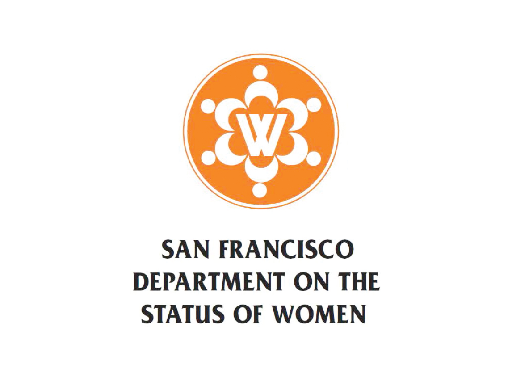

San Francisco Department on the Status of Women
Team
- Amber Hu
- Helen Kim
- Sina Siddiqi
Opportunity
Each of the funded programs is required to submit quarterly reports on their performance, as well as empirical data on how they use the grants. Currently, all reports and reminders are passed through emails which lead to scattered files that risk becoming lost in the midst of these transactions. After gathering these reports individually, they must be renamed and organized into a specific naming system and directory in order to be processed through the Master Excel for the annual reports, leading to a laborious, unsustainable process.
Outcomes
We are pleased to report that we were able to deliver our clients the promised custom application. The web application has been thoroughly tested by both our team and our clients through multiple iterations and is ready to be used starting with the upcoming fiscal year. All current users, such as the SF DOSW admins and interns, as well as pre-existing grantee programs and their respective users have all been entered into the system, so they each have their own log-in credentials. Each user role has a different level of authorization to ensure privacy and security in the information that is made accessible for each user. Basically, grantee organizations can submit their reports through their dashboard, admins and interns can download and check on file submissions, but admins also have extended abilities that aid the management of data. Additionally, the Master Excel has been reformatted to be much more dynamic and versatile.
Deliverables
We delivered a web application, pre-populated with the current grantee organizations and SF DOSW staff information, as received from the SF DOSW. Additionally, we delivered the following: admin credentials, all the project components set up under the SF DOSW name, updated Master Excel, application manuals for the different level of users, and additional recommendations that the SF DOSW should consider moving forward.